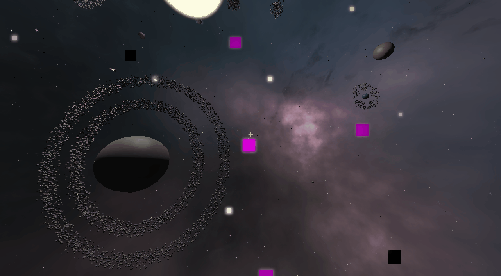
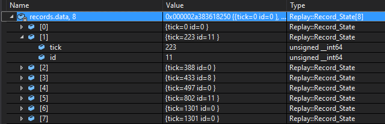
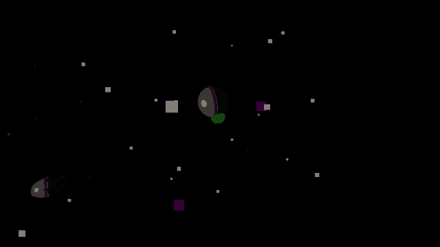

Adenoid
Adenoid is a 3D procedurally generated infinite space game where the universe can be examined at nearly any scale. It was written from scratch in c++/OpenGL. It began its life as an evolution of a previous project “Don’t Die Pluto”. The player tethers onto celestial bodies to swing around the universe, accruing mass, avoiding hazards, and uncovering secrets.
Planet Generation
I wanted this game to be spatially infinite, so I was excited to start experimenting with generating planets.

Initially, my approach was to subdivide an icosphere. This turned out to be a bad idea for several reasons: culling, texture mapping, and no granularity in detail. Increasing the detail requires a whole extra subdivision, which increases the number of vertices exponentially.
The current approach is to generate a cube and extrude each vertex to a constant radius from the center. This was good because entire faces of this “rounded cube” could be culled, textures are straightforward to map to each face, and there’s finer control over poly count.
Replay System
The replay system has been an invaluable asset for development. Each run of the game can be saved and played back. It’s useful for reproducing bugs as well as playtesting. My style of playtesting is generally hands-off, to let people have their own unmonitored experience with the game. So being able to examine a play session after the fact has been quite informative.
Like every game, the simulation is stepped in fixed increments:
if (program_mode == GAME) {
simulation_timer += dt * simulation_speed;
while (simulation_timer >= SIMULATION_TIME_STEP) {
sim.step_simulation(SIMULATION_TIME_STEP);
simulation_timer -= SIMULATION_TIME_STEP;
}
}
There are many reasons this is done, and determinism is one of them. Meaning the same inputs on the same ticks will yield the same result. Thankfully the user inputs into the game are very simple, the player can tether onto an entity or release it.
All that’s left to do is to save the ID of the tethered entity each time it changes and note the tick it happened on. Then in playback, force the user to tether onto that particular entity.
Pre-Optimizing Star Systems
There are an infinite number of galaxies, each containing many star systems, each star system containing planets, and thousands of asteroids. Initially, the thought was that a galaxy might contain so many star systems that handling all this data would be infeasible without some clever solution.

Each Yellow sphere is a star system, containing planets and asteroids. The distant Gray spheres are galaxies, containing an array of star systems. There is a White “bubble” that surrounds the player, and it is updated/refreshed whenever the player moves out of the Red sphere, recentering around the player.
Initially, I was under the impression that this was a ton of data and that some clever solution was necessary. So each star system was sorted by distance from the player. The key idea here was that on each refresh, this ordering doesn’t change very much, and as we know from computer school, insertion sort works very fast on a mostly sorted array. Having the star systems sorted by distance to player means once we hit a star system that's outside our range, we can stop iterating over them because all future systems will be even further away. This means that all the relevant data is contiguous in memory. This will be so fast!
As it turns out, for gameplay reasons, the number of star systems won’t ever exceed 1000. This is a trivial amount of data, and just checking the bubble against each star system is basically free and isn’t even a frequent event (maybe once every 100 ticks). The entire optimization strategy was scrapped in favor of the basic approach for robustness. The galaxies themselves are divided into cubic chunks and I check if you’re inside a particular chunk and activate that galaxy.
Aim-Assist
Selecting the entity you want to target, like many games, requires some level of dexterity with the mouse. However, this game is at its most interesting when it’s about learning to use the tether well, and less about being good with the mouse. For this reason, I’ve implemented a slow-mo as well as a tunable aim-assist.
The aim assist works by first casting a ray out from the camera, then finding the closest point on each planet to this ray. This is superior to just using a cone and comparing based on distance. With this approach, the closest thing to what the player was aiming at is what gets picked.